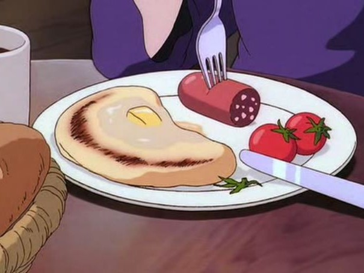

A Witch’s Secret to Magical Fluffy Pancakes
Ideal for broomstick mornings, sausage-filled energy, and restoring magical power ✨
This is the ideal breakfast before a long day of delivery work on your broomstick. Sausage and blistered tomatoes really round out this morning meal, which will surely bring your magic powers back if you’ve been feeling under the weather!
Yield: 2 servings
Prep time: 7 minutes
Cook time: 35 minutes
Ingredients
- 3 tbsp salted butter, plus extra for serving
- 2 tbsp olive oil
- 1 small vine cherry tomatoes
- ½ teaspoon dried mixed herbs, such as Robertsons Mixed Herbs or Italian seasoning
- Salt and pepper, to taste
- 1½ cups all-purpose flour
- ¼ cup superfine sugar
- ½ tsp salt
- 3 tsp baking powder
- ½ tsp baking soda
- 1¼ cups buttermilk
- 1 large egg
- 1 tsp vanilla extract
- 4 tbsp neutral oil, divided
- 1 smoked kielbasa sausage
- Maple syrup, for serving

🍯 Warm, fluffy, and witch-approved pancakes with blistered tomatoes and sausage.
Instructions
- Melt the butter in the microwave for 1 to 2 minutes. Allow it to cool completely while you prepare the rest of your ingredients.
- Drizzle the olive oil over the vine of tomatoes in a small bowl, then season it with the dried mixed herbs or Italian seasoning, salt, and pepper. Roast the tomatoes on the grill or under the broiler for 6 to 8 minutes, until the tomatoes start to blister.
- In a medium mixing bowl, combine the flour, sugar, salt, baking powder, and baking soda until the ingredients are well mixed.
- Make a well in the center of the flour mixture. Add the buttermilk, egg, vanilla extract, and melted butter.
- Whisk until the batter is well mixed; it may be slightly thick and lumpy. If the batter is too dry, add 1 to 2 tablespoons of extra buttermilk to the batter and stir. The batter should be slightly thick and should pour easily.
- Heat 1 tablespoon of neutral-flavored oil in a medium nonstick frying pan over medium-high heat. Add a scoop of pancake batter to the pan and cook each side for 3 to 4 minutes, until lightly golden brown. Repeat with the rest of the batter, making 4 large pancakes (4 to 5 tablespoons per pancake) or 10 mini-pancakes (2 tablespoons per pancake)./li>
- While the pancakes are cooking, cook your smoked kielbasa sausage according to the package instructions.
- Serve the pancakes hot between 2 plates, with a small slab of butter, maple syrup, the smoked sausage, and the blistered tomatoes. Enjoy immediately.
Tips
- ✨ Add chopped chives or cheese to the batter for a savory twist.
- 🍓 Serve with berries or a swirl of whipped cream for extra magic.
- 🐾 Don’t forget to share a bite with Jiji!